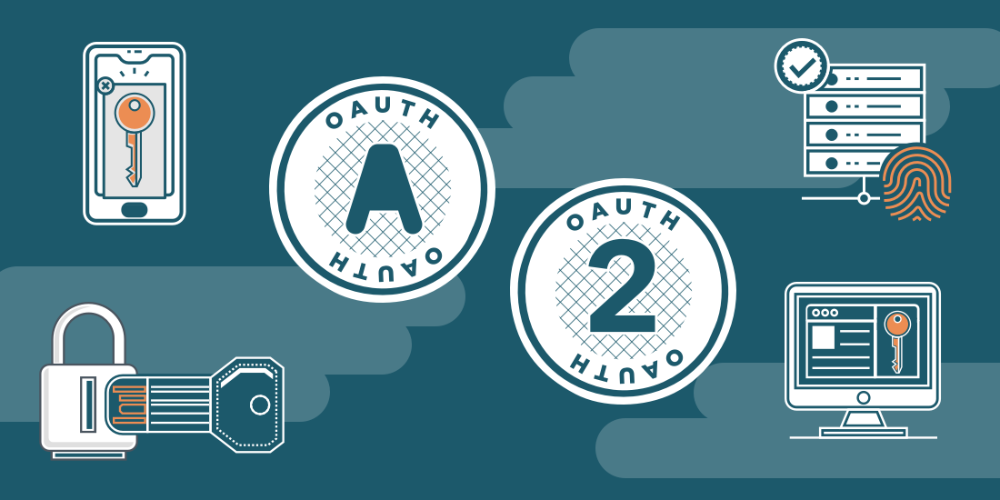

OAuth 2.0 Authentication

OAuth 2.0 Authentication is a method that is used for authorization purpose for web based applications and APIs. OAuth is an open standard for access delegation, commonly used as a way for users to grant websites or applications access to their data/information on other resources without giving them the passwords. Companies like Amazon,Google, Facebook, Microsoft, Twitter and YellowAnt uses this mechanism to permit the users to share data/information about their accounts with third party applications or websites.

you use most of the days utilizes OAuth method.For example,
if you’re shopping for an item and you find that particular item on a shopping application website and
You’d like to buy it from that application website, but the only problem is that you don’t have an
account.
On homepage, if you see an option to login using your Facebook or Google account. In this case, you
are
resource owner,
so that particular website is a client application, and Facebook or Google will be the API, or the
authorization server.
Now, you’ll have to provide that application website with some additional information to purchase
items,
but by using OAuth Authentication technique, it allows you to log into application without creating an
additional password.
Today, logging in using Facebook or Google has made things easier across the Internet.
why ?
- Using OAuth it allows you to grant private resources from one resource to another. OAuth gives you access to certain things without sharing your identity , which protects your privacy.
- As we discussed above, using your Facebook or google data might be used for improving your experience on that particular web application which helps Customer experience .
- Using authentication system created by larger companies, like Facebook or Google will be easier and less risky than creating one in third party web based application where depends some Stronger authentication.
- OAuth supports in all popular languages such as JavaScript, PHP, Java, Ruby, Python, .NET, and many others.
- OAuth includes two main parts: obtaining a token from the user by asking from the user to grant access, and using tokens to access protected resources
- With OAuth2.0 the application can make a request using the issued tokens over HTTPS. Also no more special parsing, sorting, or encoding is needed in OAuth2.0.
- OAuth 2.0 has the notion of refresh tokens. The access tokens can be short lived (i.e. session based) while the refresh tokens can be “life time”. You can use a refresh token to generate a new access token rather than have the user re-authorize your application.
key Roles of OAuth 2.0
-
Resource Owner
The user who authorizes an application to access their account and to the protected resources. The application’s access to the user’s account will be limited to the “scope” of the authorization granted (e.g. read or write access).
-
Resource Server
The resource server hosts the protected user accounts and is capable of accepting and responding to protected resource requests using access tokens.
-
Client
The client is the application that wants to access the user’s account. Before it may do so, it must be authorized by the user.
-
Authorization Server
The authorization server verifies the identity of the user then issues access tokens to the application.
- The client requests authorization to access service resources from the user. The client needs to provide the client ID, client secret, redirect URI and the required scopes.
- The client receives an authorization grant, which is a credential representing the resource owner's authorization, expressed using one of four grant types defined in this specification or using an extension grant type. The authorization grant type depends on the method used by the client to request authorization and the types supported by the authorization server.
- The client requests an access token by authenticating with the authorization server and presenting the authorization grant.
- The authorization server authenticates the client and validates the authorization grant, and if successfully validated then issues an access token.
- The client requests the protected resource from the resource server and authenticates by presenting the access token.
- The resource server validates the access token, and if successfully validated, it will serve that particular request.